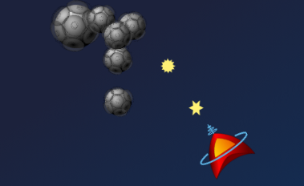

Please note: this article is part of the older "Objective-C era" on Cocoa with Love. I don't keep these articles up-to-date; please be wary of broken code or potentially out-of-date information. Read "A new era for Cocoa with Love" for more.
An Asteroids-style game in CoreAnimation, Part Three.
How would you write an arcade-style 2D game in CoreAnimation? I'll show you how to write a resolution independent, high-speed, model-view-controller designed, Asteroids-style arcade game using CoreAnimation as the screen renderer. In this third of four parts, I add the logic for the game and game objects and present the finished code for the project.
From renderer to game
In the previous post, I presented a rendering system using CoreAnimation layers (CALayer). To complete the game, we now need to add the game logic.
For this Asteroids-style game, the game logic will be very simple but will need to include the following components:
- User control of the ship
- Shooting and shot/asteroid collision detection and destruction.
- Player/asteroid collision and a finite number of player "lives"
- Level logic, so that a new, harder level is started when the previous one is cleared.
With the game logic added, the code for the project will be complete.
A screenshot of the game with shots and asteroid destruction.
User control
Most games treat keyboard input in a different manner to applications. Instead of reading keyDown: messages, including the isARepeat messages (whose delay and frequency are specified in the System Preferences), games simply want the state of specific keys at a given time. e.g. "Is the 'thrust' key pressed?"
To provide the game with what it wants, I created a subclass of NSView to use as the contentView of the window. The sole purpose of this view subclass is to read key event messages passed to the window. When keyDown: messages are received, boolean values on the GameData object are set. When the keyUp: message is received, the boolean values are cleared. In this way, we store the keyboard state so we can read it in an asynchronous manner whenever it is needed.
The implementation of the keyDown: method follows.
- (void)keyDown:(NSEvent *)event
{
NSString *characters = [event characters];
if ([characters length] == 1 && ![event isARepeat])
{
const NSInteger ESCAPE_KEY_CODE = 27;
unichar character = [characters characterAtIndex:0];
if (character == NSLeftArrowFunctionKey)
{
[[GameData sharedGameData] setLeftKeyDown:YES];
}
else if (character == NSRightArrowFunctionKey)
{
[[GameData sharedGameData] setRightKeyDown:YES];
}
else if (character == NSUpArrowFunctionKey)
{
[[GameData sharedGameData] setUpKeyDown:YES];
}
else if (character == ' ')
{
[[GameData sharedGameData] setShootKeyDown:YES];
}
else if (character == ESCAPE_KEY_CODE)
{
[gameController togglePause:self];
}
}
}Notice that Apple provide constants for higher level keys (like the arrow keys) but you are expected to handle ASCII codes (like the Escape key) yourself. You can get these from the ASCII manual page (man ascii in a terminal window). Be careful to avoid the octal set — I have no idea how it earned first position in this file.
To respond to these new keyboard flags, I will create a subclass of GameObject (the generic class representing an object in the game) named PlayerObject to handle the player's ship. The real purpose of this subclass will be to add game-logic related behaviors. The primary location for adding behaviors will be an override of the parent class' updateWithTimeInterval: that supplements the default behavior with player-specific movement and interaction.
Here is the code to handle the "thrust" key (the up arrow):
if ([GameData sharedGameData].upKeyDown)
{
double scaledAcceleration = timeInterval * PLAYER_ACCELERATION;
double dX = speed * cos(trajectory) + scaledAcceleration * cos(angle + M_PI_2);
double dY = speed * sin(trajectory) + scaledAcceleration * sin(angle + M_PI_2);
speed = sqrt(dX * dX + dY * dY);
trajectory = acos(dX / speed);
if (dY < 0)
{
trajectory *= -1;
}
if (speed > PLAYER_MAX_SPEED)
{
speed = PLAYER_MAX_SPEED;
}
}This code is some basic trigonometry to add the ship's current speed/trajectory vector to the new thrust vector, limiting the ship's maximum speed. The actual x and y of the ship is modified by invoking the super implementation (which applies this speed and trajectory).
Model-view-controller design note
This approach to key control is not typical of an application. In an application, a user-interface controller chooses the target object and sends the keyboard control directly to that object. In this game, the user-interface sets keyboard state in a game-accessible location and game objects choose whether to incorporate that state into their own. This behavior is good for a game because it allows the game objects to choose their own interaction logic but games represent a special case in this regard.
Firing shots
The other key aspect of user control in the game is the ability to fire shots.
Once again, I will use a GameObject subclass to handle the shots. These ShotObjects will be created in the PlayerObject's updateWithTimeInterval: method, since they will need to incorporate speed and trajectory information from the PlayerObject.
The following code fires a shot when the user presses the 'shoot' key (spacebar).
ShotObject *newShot =
[[ShotObject alloc]
initWithX:x + 0.5 * width * cos(angle + M_PI_2)
y:y + 0.5 * height * sin(angle + M_PI_2)];
[[GameData sharedGameData]
addGameObject:newShot
forKey:[[GameData sharedGameData] keyForShotAtIndex:nextShotIndex]];
nextShotIndex = (nextShotIndex + 1) % PLAYER_MAX_SHOTS;
[[GameData sharedGameData]
setGameDataObject:[NSNumber numberWithInteger:nextShotIndex]
forKey:GAME_DATA_NEXT_SHOT_INDEX_KEY];
double dX = speed * cos(trajectory) + PLAYER_SHOT_SPEED * cos(angle + M_PI_2);
double dY = speed * sin(trajectory) + PLAYER_SHOT_SPEED * sin(angle + M_PI_2);
double shotSpeed = sqrt(dX * dX + dY * dY);
double shotTrajectory = acos(dX / shotSpeed);
if (dY < 0)
{
shotTrajectory *= -1;
}
newShot.speed = shotSpeed;
newShot.trajectory = shotTrajectory;
shotCooldown = PLAYER_SHOT_COOLDOWN;The initWithX:y: line creates the ShotObject.
The addGameObject:forKey: part adds it to the game. GameObjects are all stored by a single key in this game but I use the keyForShotAtIndex: to create this key from a prefix ("shot") and a suffix (the shot's index) so that I can extract information about the object from its key.
This is a lazy approach to organizing game objects and any larger game would want to store its objects in a more metadata rich storage system. Better organizations might include:
- metadata methods on each game object so you can query each object about what it is
- additionally storing game objects in dictionaries keyed by type or other essential category information
- storing game objects in richly indexed system like an SQLite database (which is then accessible by any column)
The setGameDataObject:forKey: line sets the number of shots that the player has fired in the GameData's generic object storage. This will allow us to limit the number of shots fired by the player to PLAYER_MAX_SHOTS.
The next code is some more trigonometry to apply the ship's speed and trajectory to the shot. Then finally the shotCooldown value is set. This is a simple counter (decremented on each updateWithTimeInterval:) which will prevent another shot being fired while it is greater than zero (allowing us to set the minimum time between shots).
Collisions
Last week's code contained a very simple main update loop that called the updateWithInterval: method on all GameObjects. This time, we expand the update loop to the following:
- (void)updateLevel:(NSTimer *)aTimer
{
if (lastUpdate)
{
frameDuration = [[NSDate date] timeIntervalSinceDate:lastUpdate];
[lastUpdate release];
lastUpdate = [[NSDate alloc] init];
}
else
{
frameDuration = GAME_UPDATE_DURATION;
}
NSArray *allKeys = [gameObjects allKeys];
for (NSString *gameObjectKey in allKeys)
{
[gameObjects willChangeValueForKey:gameObjectKey];
GameObject *gameObject = [gameObjects objectForKey:gameObjectKey];
if ([gameObject collide])
{
[gameObjects removeObjectForKey:gameObjectKey];
}
}
for (NSString *gameObjectKey in allKeys)
{
GameObject *gameObject = [gameObjects objectForKey:gameObjectKey];
if (!gameObject)
{
[gameObjects didChangeValueForKey:gameObjectKey];
continue;
}
if ([gameObject updateWithTimeInterval:frameDuration])
{
[gameObjects removeObjectForKey:gameObjectKey];
}
[gameObjects didChangeValueForKey:gameObjectKey];
}
}We time the duration between updates ourselves, even though we ask the NSTimer to invoke us every 0.03 seconds. This allows us to keep the animation as smooth as possible even if the timer is delayed or frames start taking longer than 0.03 seconds to complete.
After this, we iterate over all the GameObjects twice: once to process collisions and once to update positions. The reason for this separation is to ensure that all of the game objects are at the same moment in time when we process them for collisions — if we processed collisions during the update of positions then everything already updated for position would be 1 frame ahead of objects not yet processed when collisions are tested.
I chose to perform collisions before the update so that the collision applies to what the user can currently see (rather than what they will see after CoreAnimation updates).
Performing collisions is very simple — especially in this game since I'm only performing bounding box collisions. The collision code in ShotObject which tests for collisions between shots and asteroids follows.
- (BOOL)collide
{
NSString *collision = [[[GameData sharedGameData]
collideObjectsWithKeyPrefix:GAME_ASTEROID_KEY_BASE
withObjectForKey:keyInGameData]
anyObject];
if (collision)
{
[AsteroidObject spawnNewAsteroidsReplacing:collision];
return YES;
}
return NO;
}Once again, I'm using the prefix metadata in my game object keys to select asteroids for collisions.
The collision code lives on the GameData class.
- (NSSet *)collideObjectsWithKeyPrefix:(NSString *)prefix withObjectForKey:(NSString *)testObjectKey
{
GameObject *testObject = [gameObjects objectForKey:testObjectKey];
NSMutableSet *result = [NSMutableSet set];
NSRect testRect = NSMakeRect(
testObject.x - 0.5 * testObject.width,
testObject.y - 0.5 * testObject.height,
testObject.width,
testObject.height);
for (NSString *gameObjectKey in gameObjects)
{
if ([gameObjectKey isEqualToString:testObjectKey] ||
[gameObjectKey rangeOfString:prefix].location != 0)
{
continue;
}
GameObject *gameObject = [gameObjects objectForKey:gameObjectKey];
NSRect gameRect = NSMakeRect(
gameObject.x - 0.5 * gameObject.width,
gameObject.y - 0.5 * gameObject.height,
gameObject.width,
gameObject.height);
if (NSIntersectsRect(gameRect, testRect))
{
[result addObject:gameObjectKey];
}
}
return result;
}This code creates a bounding rectangle from the GameObject specified by the testObjectKey and collides it with all objects stored by keys starting with prefix that aren't the testObject itself.
This code returns the whole set of colliding objects — overkill since the game only ever uses one at a time — but functional and easily fast enough for our purposes.
Tying it all together
We can control the ship, shoot and hit asteroids. There's a bit more that's in the game that you can see if you want:
- The shots animate through 5 frames and expire after a fixed amount of time. I chose to store the current animation frame in the game data and handle the animation there (instead of in the view like the asteroid animation was in the last post). I wanted to show that animation state could be part of the game data if it is data-related (this animation isn't really data-related so I have some regrets).
- The asteroids start at random locations in a ring around the player for each level and spawn 3 smaller asteroids when shot, each of which travels in a random direction with a random rotation.
Instead of dwelling on that, I'll jump to the last part of the game logic: the game (including lives) and the levels.
I want the following behaviors in the game:
- The player begins with 3 lives at level 1.
- Each level starts with a "Prepare for level X..." message for a few seconds before displaying the contents of the level and starting normal play.
- Every time the player loses a life (collides with an asteroid) the game displays an "X lives remaining..." message for a few seconds before positioning the player in the middle of the screen and starting normal play again.
- When the number of lives hits zero, a "Game Over" message is displayed and the game is stopped.
The data containing the number of lives and the current level are just objects in the gameData dictionary. Creating a new level creates (3 + levelNumber) asteroids and places the player in the center. The messages are just a string, set using a specific GAME_DATA_MESSAGE_KEY, also on the gameData dictionary. These values are displayed by using bindings to connect them to ordinary NSTextFields in the window.
More interesting is that the game needs to change its underlying behavior when the player dies or a new level begins.
The solution I chose is to maintain two different update loops for the two basic behaviors. The updateLevel: method I've already shown is the "normal" update method. A second update method named readyCountdown: will be used to do nothing (not update the GameObjects) for a few seconds while a message is displayed, before returning to the regular update method.
Along with newGame, newLevel and endGame methods, the game now has the ability to transition between different gameplay states.
Conclusion
Download the complete, finished game Quartzeroids2.zip (239 kB).
With the window and design from the first part, the rendering and layers from the second part and now the game logic, the game is complete. Download it, build it, play it and be underwhelmed by its simplicity.
In the final part, I'll present analysis of CoreAnimation's utility as a game rendering engine. I'll look at some features of CoreAnimation that I didn't use, including features that impacted negatively on performance. I'll also look at how CoreAnimation performance changes as the number of render objects is increased.
An Asteroids-style game in CoreAnimation, Part Two.
An Asteroids-style game in CoreAnimation, Part Four.